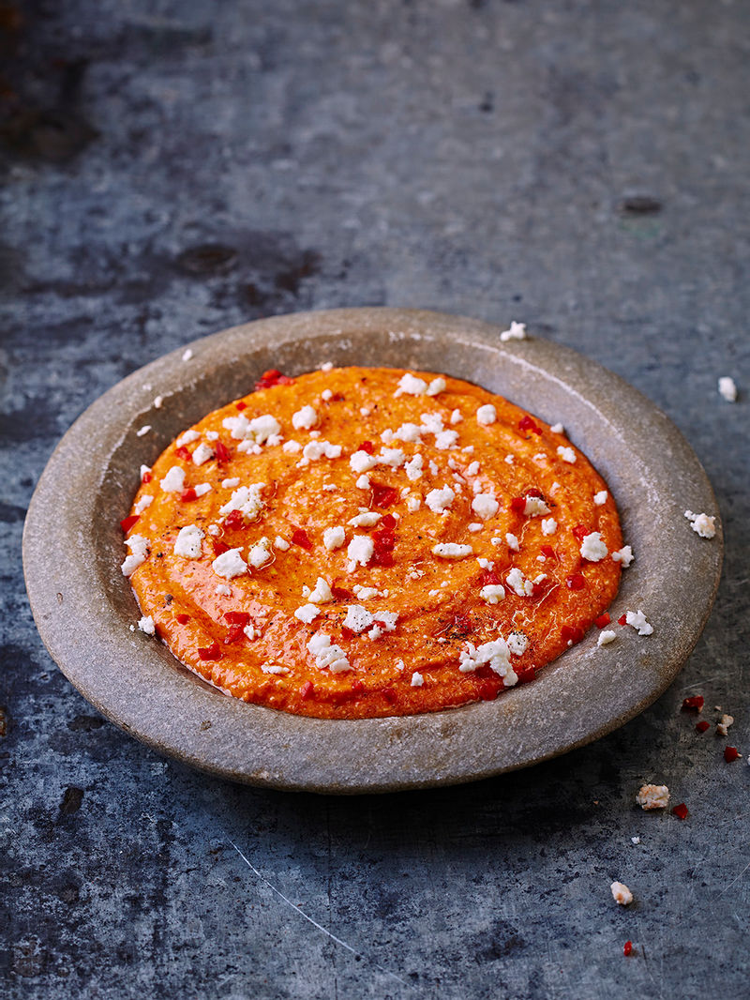

Spicy feta & pepper dip

delicious dip to go with anything you wants
Ingredients
- 240 g feta cheese
- 120 g jarred red peppers (drained weight)
- 3 tablespoons olive oil
Method
- In a food processor combine the feta, red peppers and oil.
- Season with black pepper and blend until smooth.
- Transfer to a bowl, then serve